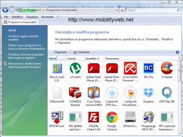
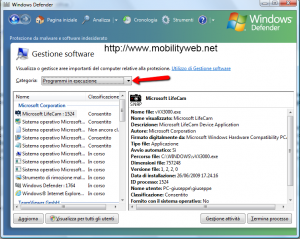

In questo post ho parlato della presenza di programmi pericolosi, che se installati sul nostro computer, possono provocare delle falle tali da permettere l’accesso a malware di ogni specie. Questi programmi prendono il nome di Scareware e negli ultimi tempi si stanno espandendo a macchia d’olio. Cadere nella trappola di questi finti software è molto semplice, ma per fortuna esiste il modo di eliminarli. Prima di tutto dobbiamo verificare la presenza di un programma Scareware sul nostro computer. L’operazione è molto semplice, perche’ nella maggior parte dei casi ad installare il programma siamo proprio noi, dopo aver visualizzato un sito Web contenente della pubblicità ingannevole riguardo a programmi che promettono di deframmentare, riparare, difendere e ottimizzare il nostro PC. Verificato il nome del programma nocivo, possiamo prima di tutto provare a disinstallarlo seguendo il percorso Start/Pannello di controllo/programmi/Disinstalla un programma.

Come seconda azione, controlliamo il menu Esecuzione automatica seguendo il percorso Start/Pannello di controllo/Cambia programmi ad esecuzione automatica. Appena si apre la finestra di Windows Defender con la relativa sezione Gestione software, dal menu a tendina, selezioniamo Programmi in esecuzione e verifichiamo la presenza o meno di un collegamento al programma Scareware.

Se con questi passaggi non è stato possibile rilevare la presenza dello Scareware, possiamo passare all’utilizzo di due tool. Il primo è lo strumento di rimozione malware integrato all’interno di Windows e il secondo è un software offerto gratuitamente da G Data, la nota software house di sicurezza, che possiamo scaricare da qui.